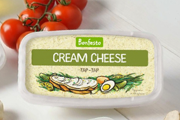
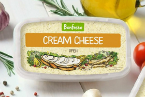

Представлен в брендах
-
Все бренды

Сыр мягкий
кремчиз
тар-тар
Прекрасно заменяет классический французский соус из желтка, растительного масла и зеленого лука.

Сыр мягкий
кремчиз
хрен
Хорошо для бутербродов с рыбой или мясом. Можно добавлять в салаты для пикантного вкуса.

Сыр мягкий
кремчиз
неаполитанский
Идеален для курицы, отлично сочетается с говядиной в блюдах средиземноморской кухни.